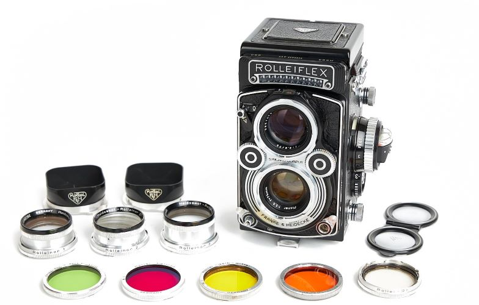
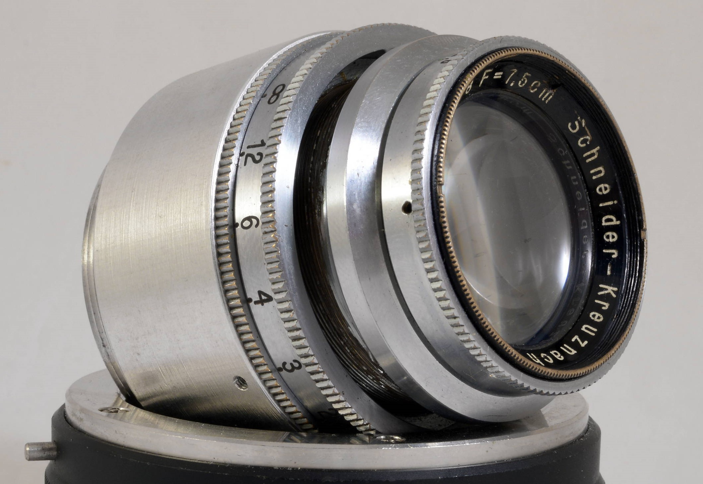
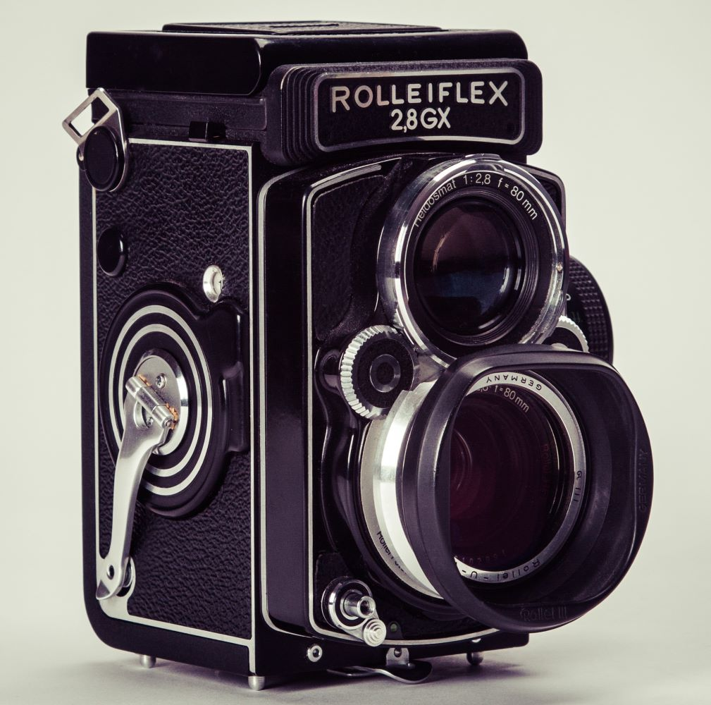

Product Information
The "Rolleiflex" name is most commonly used to refer to Rollei's premier line of medium format twin lens reflex (TLR) cameras. (A companion line intended for amateur photographers, Rolleicord, existed for several decades.) However, a variety of TLRs and SLRs in medium format, and zone focus, and SLR 35 mm, as well as digital formats have also been produced under the Rolleiflex label. The 120 roll film Rolleiflex series is marketed primarily to professional photographers. Rolleiflex cameras have used film formats 117 (Original Rolleiflex), 120 (Standard, Automat, Letter Models, Rollei-Magic, and T model), and 127 (Baby Rolleiflex).
The Rolleiflex TLR film cameras were known for their exceptional build quality, compact size, modest weight, superior optics, durability, simplicity, reliable mechanics and bright viewfinders. The high-quality 7.5 cm focal length lenses, manufactured by Zeiss and Schneider, allowed for a smaller, lighter, more compact camera than their imitators.[citation needed] The highly regarded Zeiss Planar f2.8 and Schneider Xenotar lenses, both 80mm focal length and fast in comparison, are both state of the art optics. Unique to the Rolleiflex Automat and letter model cameras, the mechanical wind mechanism was robust and clever, making film loading semi-automatic and quick. This mechanism started the exposure counter automatically, auto-spaced the 12 or (on the later model F cameras) 24 exposures, and tensioned the shutter; all with less than one full turn of the film advance crank. This makes the Rolleiflex Automat/Letter model cameras very sought-after for shooting fast-paced action, such as street photography.
A range of accessories made this camera a system: panorama head, sun shade, parallax-corrected close-ups lenses, color correction, contrast enhancing, and special effect filters, all mounted with a quick release bayonet, as well as a quick-change tripod attachment. Some, professional, amateur and fine-art photographers still shoot Rolleiflex TLR film cameras with color transparency, color negative, or black-and-white film. The later f2.8 and f3.5 letter models (Planar or Xenotar lens) are highly sought after in the used market, and command the greatest price.Historically there were five focal length cameras available including 5.5 cm Rollei-Wide, 6.0 cm Baby Rollei, 7.5 cm (f:3.5), 8.0 cm (f2.8), and 13.5 cm (f:4 Zeiss Sonnar) Tele-Rolleiflex. Although all Rolleflex cameras can be fine user cameras, there is also an active market for many Rolleiflex models as collectables, and this adds (greatly in some models) to the end price paid, particularly in Japan.